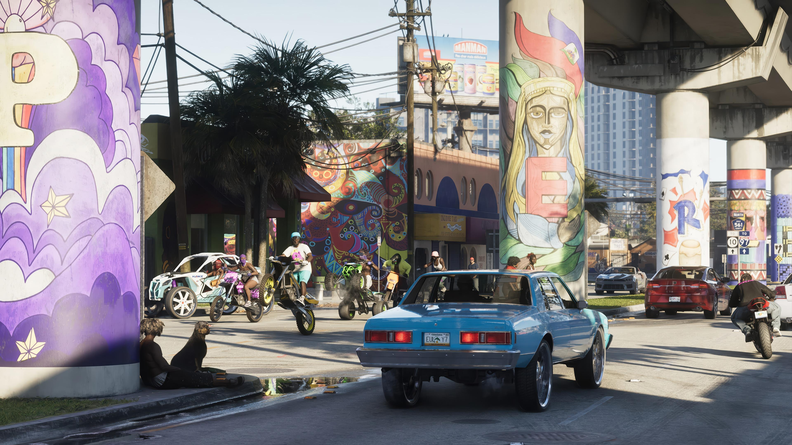

Praias e áreas urbanas
Título: Entre praias e grandes cidades
Além de Vice City, Leonida apresenta diferentes regiões e paisagens, que vão de áreas pantanosas a territórios industriais e ambientes naturais. Explore Grassrivers, Ambrosia, Port Gellhorn, Leonida Keys e o Parque Nacional Mount Kalaga, cada um com características próprias.



Locais de exploração
Explore cada canto de Leonida
- Grassrivers
- Ambrosia
- Port Gellhorn
- Leonida Keys
- Parque Nacional Mount Kalaga